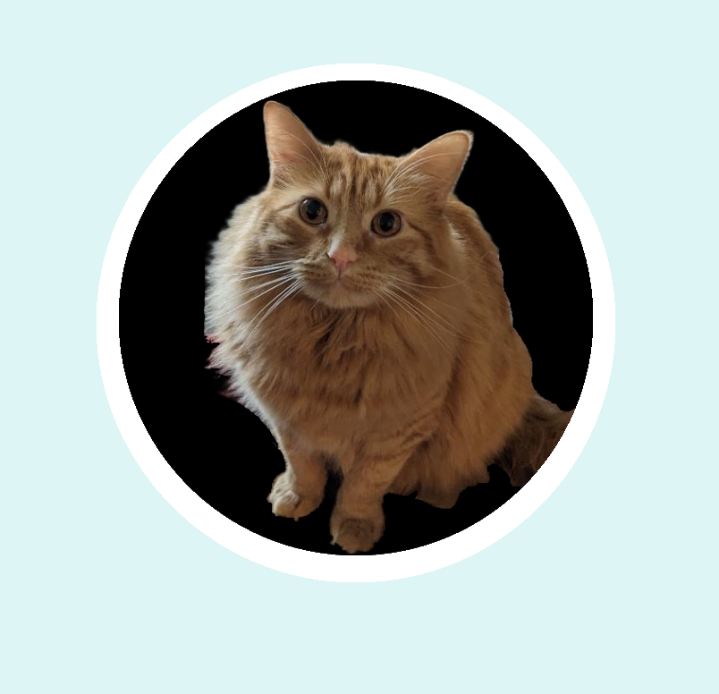

Prework Study Guide

✨ Open the Console to See What's Happening ✨
HTML
- The head element contains information about the webpage.
- The body element contains the visible content on the page.
- h1 through h6 provide headers, which help with readability as well as accessibility.
- For lists, ul is an unordered list and ol is an ordered list, while li is a list item.
- Images, img, should have src, of course, as well as alt, for accessibility.
- !!!IMPORTANT!!! If you make a mistake in your opening tag, make sure the closing tab did not generate incorrectly if it is set to auto generate! If there is an extra indentation on the next line it should be investigated and not disregarded
CSS
- Margins are empty space outside the object border, padding is empty space inside the object border.
- Properties can be set for multiple elements at once by listing elements with commas.
- Set properties for based on element class by listing .___, where ___ is the class.
Git
- git status notifies of new files, unstaged changes, staged changes, and current branch.
- git branch will display existing branches, with * before the currently active branch.
- !!!IMPORTANT!!! Main branch should not be directly worked on. simply create a new branch. it's free and the cops can't stop you
- git checkout ___ will switch branches, with ___ being the name of the destination branch. Put -b before the branch name to create a new branch of that name.
- git add ___ stages changed or new files for next commit. ___ can be a file name(img.png), a folder(folder/), or all files in the directory(-A)
- git commit -m "message" will commit currently staged changes to current branch
- git pull origin main will copy the main branch of the remote repository(GitHub) to your current local branch. This is good practice to do before pushing any commits.
- git push origin ___ will upload your local branch to the repository(GitHub), under the branch name ___.
JavaScript
- Comments in Javascript are ignored by the browser, and can be made by starting a line with // or by placing any number of lines between /* and */